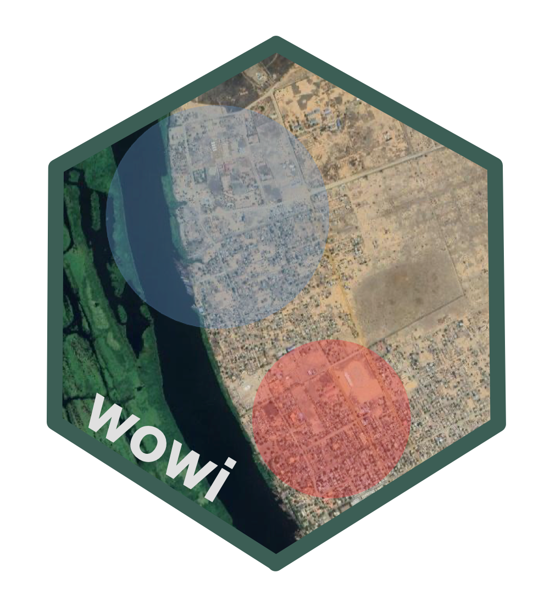
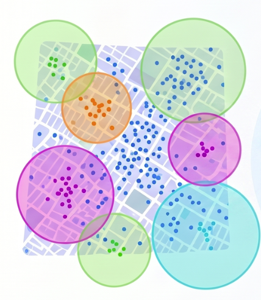

Grasping Spatial Clusters
Concepts and Core Considerations for Analysis and Interpretation
18 October 2026
Source:vignettes/grasping-spatial-clusters.qmd
Leveraging spatial analytics in the field of public health nutrition — beyond the plotting of basic choropleth maps — has historically been uncommon, despite the well-established fact that acute malnutrition, like other diseases, exhibits geographical variation. Spatial cluster analytics have been utilised before to explore the geographic variation of several public health issues (Robin et al., 2019; Eryando, 2022), enabling decision makers to better understand community health needs and allocate resources in a cost-effective manner (Haining and Maheswaran, 2016).
Nutrition programme managers have constantly been — and continue to be — confronted with the challenge of prioritising resources and responses to where needs are most pressing. Currently, this challenge has further deepened with the shrinking of the funding environment that humanitarian actors are experiencing since the beginning of 2025, leading to the need for a revamped prioritisation strategy for available resources — “hyperprioritisation”.
Even before these times of hyperprioritisation, setting prioritisation without spatial analytics has been a challenge, with different approaches being employed to identify communities in need. For instance, in some countries, prioritisation of communities to be served has been based on distance. Communities living in remote areas are prioritised for integrated health and nutrition outreach activities over nearby communities, with the premise that remote communities are the most vulnerable for being far away from basic services available at the central district. Whilst the underlying reasoning may be logical, it is not always true due to the wide range and complex interplay of the factors that lead to acute malnutrition.
Currently, leveraging spatial analytics to “pin-point” locations wherein there is an excess of acute malnutrition is becoming increasingly common, widely accepted, and deemed both necessary and relevant. The wowi package is at the centre of this breakthrough. At the time of writing, wowi has been used to inform humanitarian situation analyses and responses across four countries: Somalia, South Sudan, Sudan, and Mozambique.
With the growing use of spatial cluster analysis, it is important to understand a few core concepts and considerations. In this sense, this article will walk you through the essence of spatial cluster analysis in spatial epidemiology, with an emphasis on the method used in wowi. Moreover, you will also be guided through some core considerations worth keeping under your belt when analysing and interpreting spatial clusters. Because the focus of wowi is currently limited to acute malnutrition, these considerations are put into the perspective of acute malnutrition.
Core Concepts: Spatial Epidemiology, Spatial Clusters, Spatial Structure, and Spatial Autocorrelation
Spatial epidemiology — also referred to as disease mapping — focuses on the study of the geographical or spatial distribution of health outcomes. Data that exhibit a discernible pattern across geographic space are said to have a spatial structure (Jordan, 2023). In other words, the occurrence and magnitude of the outcome vary systematically across locations and are influenced by underlying geographical, environmental, demographic, or socio-economic conditions. On the other hand, data without a discernible spatial structure are said to have been generated by an independent random process (IRP), or that exhibit complete spatial randomness (CSR) (Jordan, 2023).
A spatial cluster is defined as a concentration of cases in a specific geographic area that is statistically significant and differs from what would be expected under an IRP or CSR (Aldstadt, 2010). There are several methods that can be leveraged to glean the underlying spatial structure hidden in the data. These are grouped into two major buckets: (1) global or general tests and (2) local tests, all grounded on the spatial autocorrelation.
Spatial autocorrelation is a measure as to whether spatial structure is present in the data (Rogerson and Jacquez, 2016; Jordan, 2023). Essentially, it measures the variation of a variable — say malaria — by taking an observation from the malaria variable and seeing how similar or different it is compared to other observations within a given neighbourhood, and quantifies the extent of it. Global tests only provide an overall assessment as to whether there is a spatial structure in the data and the degree of it (Jordan, 2023); global tests do not address the where question. This task is reserved for the local tests. Local tests are designed to identify specific areas wherein spatial clustering occurs. They provide insights into the spatial structure by pin-pointing localised clusters with statistically significant high values — hot spots — and low values — cold spots (Waller, Wheeler and Switchenko, 2016).
Analysis workflow of global and local tests
The workflow is that you first undertake a global test to ascertain whether your data exhibit a discernible spatial structure. If true, then you proceed to leverage local tests to glean the spatial structure therein. However, some of the spatial clustering models go straight to local tests without passing through the global tests.
There are several statistical methods for that. wowi leverages scan tests. Scan tests are local tests.
How do Scan Tests Work?
The workflow of scan tests involves identifying spatial clusters by scanning through the data and evaluating the likelihood of observing the data under a null hypothesis of no spatial clustering or IRP/CSR. In other words, scan tests impose many scanning windows of variable sizes over an area of interest, and calculate the likelihood of the observed data within that window under the null hypothesis of IRP or CSR. This process is repeated across the entire dataset to identify locations where the observed data significantly deviates from the null hypothesis, indicating potential spatial clusters (Jung, 2016; Kulldorff, 2022). Along with it, scan test results provide information on the size of the detected clusters in kilometres, the magnitude of them - relative risk ratio, proportion of cases, and the statistically significance of them.
To build intuition for how this test works, the following visual was generated using Gemini Notebook.

Important 1: Spatial cluster analysis identifies patterns, not causes or drivers
It is noteworthy that cluster analyses help you unveil patterns hidden in your data; they do not explain why they exist or occur. That means that once unveiled, further investigation is needed to understand the underlying reasons.
Core considerations worth keeping under your belt when interpreting cluster analysis results
There are several core considerations to bear in mind before undertaking a cluster analysis as well as at the stage of interpreting results derived from it. The former revolves around the methodology through which data was derived, and the latter around their interpretability. These are expanded below, and put into the perspective of acute malnutrition.
Sound sampling design for the unit of analysis
According to Jacquez and Aldstadt (2016), interpretation of cluster findings should be premised on the underlying methodology leveraged to derive data. In other words, the designed sampling should be representative of the underlying study population.
On the matter of acute malnutrition, cluster analysis should only be undertaken leveraging population-based assessments. These can be sample-based representative surveys or exhaustive surveys or even exhaustive screenings at the unit of analysis. As known, these methods ensure that the representativeness of the underlying study population is present. Otherwise, if the scope of the underlying assessment is constrained to a subset of the population, perhaps purposively selected, say one admin level 3 rather than a sampling frame of all admin level 3s, then the results should be applied to that admin level 3 only from where data was derived.
Definition of unit of analysis for the purpose of this article
As the objective of cluster analysis is to identify spatial structure and inform targeted interventions, for the purpose of this article, a unit of analysis is the administrative unit for which programme managers design interventions to address malnutrition, typically admin level 3 (for example, districts in Somalia, localities in Sudan, and counties in South Sudan).
Large-scale surveys — those conducted above the admin level 3, aggregating several smaller units, such as livelihood-zone-based surveys — can also be leveraged for cluster analysis, and spatial clusters can be detected within them. It is noteworthy, however, that the detected clusters may not be as insightful for an effective programme response or targeting as a small-scale survey — say, a district-specific survey — would be in unveiling within-district variation in an effective manner.
To put this into perspective, in surveys like SMART, primary sampling units (PSUs) are selected based on probability proportional to size of the underlying study population (SMART Initiative, 2017). This means that in large-scale surveys, districts densely populated would have more PSUs than less-densely populated. On the other hand, in small-scale surveys, high-densely populated communities would have more PSUs. In these two scenarios, the spatial clusters would be much more insightful for programming in the latter scenario than in the former, although the former is also useful to know which districts are more vulnerable. What is lacking in the former scenario is the zoom-in to expose the within-district mapping that is much more relevant for programming.
Cluster analysis can also be leveraged in surveys derived from spatial sampling methods.
Accurate case ascertainment
Accurate case ascertainment is a critical consideration to bear in mind as they can impact the interpretation of cluster findings. It revolves around whether cases are correctly diagnosed or defined, as well as the extent to which there might be misdiagnosis in the data (Jacquez and Aldstadt, 2016). The gist of this is that as an analyst, you must be sure that your data is free of misdiagnosis beforehand. That way, the spatial structure in your data is genuine rather than an artifact of misdiagnosis. One example of how the spatial structure in the data can be an artifact of misdiagnosis is when survey teams make measurement errors in a systematic manner across the areas in which they are assigned to survey. As teams are usually assigned survey clusters (PSUs) that are geographically close to each other — because it is practical and reduces operational costs more than otherwise — systematic errors would hence be geographically bounded, thereby creating a spatially structured bias. A case in point for this is when survey teams misdiagnose bilateral pitting oedema. This would yield too many cases of acute malnutrition across the PSUs they surveyed.
Fortunately for acute malnutrition, thanks to the SMART Initiative, this and many other data-quality-related issues can be checked by leveraging the SMART plausibility check test suite (SMART Initiative, 2017).
Useful resource for plausibility checks in R
In R, you can implement the SMART plausibility check test suite by leveraging the
mwanapackage (Zaba, Guevarra and Myatt, 2026).
Incomplete reporting or missing values
Incomplete reporting or the presence of missing values of both spatial and non-spatial variables in your data can affect the cluster analysis by reducing the power to detect true clusters (Jacquez and Aldstadt, 2016). As the missing values cannot be imputed in a logical way (Jordan, 2023), they are dropped. This means that when the extent of the missing values is high, they give rise to the finding of false clusters. On the matter of spatial variables, incomplete reporting of global positioning system (GPS) coordinates is extremely common in surveys. Thus, it is a good practice to undertake an exploratory data analysis (EDA) of your data to inspect for such problems.
A case in point on how the missing-value problem can affect the analysis
Results from an EDA undertaken as part of a spatial data analysis of 10 districts of a country in East Africa found a remarkably high percentage of missing values of latitude and longitude coordinates in the dataset. Results ranged between 3% and 54%. All rows with missing latitude and longitude coordinates were excluded from the analysis. Along with it, 71 cases of acute malnutrition were consequently dropped. As evident, that affected the representation of the true geographical reality of acute malnutrition.
It is noteworthy that before wowi pipes the input data to the downstream spatial scan model, it first filters out all missing values in latitude and longitude corodinates, as well as other non-spatial variables used in the analysis.
Location uncertainty
Besides the missing-value problem, location uncertainty of GPS coordinates is another problem to have under consideration. This is probably the most overlooked problem during data collection. Survey teams may capture GPS coordinates with a wide precision and accuracy, hence increasing the location uncertainty.
Location uncertainty impacts disease clusters by introducing bias into the spatial relationship between point features (Haining and Maheswaran, 2016) and by decreasing the statistical power (Jacquez and Aldstadt, 2016), thereby resulting in flawed findings and poor public health decisions (Jacquez, 2012). In simple terms, it affects the representation of the variable’s observations to its actual geographical reality — where they actually occur. For instance, a child in the dataset may be assigned to a wrong geographical location from where he/she actually resides.
A case in point on how the location-uncertainty problem affects us
If you send your location to someone via WhatsApp — through the location feature — and you do not let your mobile device read your geographical location with the smallest accuracy value possible, the distance between your device’s calculated map position and your actual physical position on the earth’s surface — horizontal error — may be large. That location may lead the other person to a different location from where you are.
As known, all measurements contain error due to the inevitable imprecision associated with the process of taking measurements. Nonetheless, they can be minimised with adequate training and close monitoring during data collection as suggested below.
- Training: nowadays, almost all surveys leverage mobile devices for data collection. In this sense, enumerators should be trained to ensure optimal accuracy when capturing GPS coordinates. Doing so would simultaneously address the missing-value problem discussed above.
- Data quality checks: in addition to training, the usual daily (or periodic) data quality checks should also include checking the completeness of GPS coordinates, as well as checking the mean, median, minimum, and maximum values of the accuracy associated to a pair of latitude and longitude coordinates. Ideally, these checks should be split by teams to better assess the quality.
What is the recommended positional accuracy of GPS coordinates?
While it is not clear what constitutes the optimal recommended GPS positional accuracy (horizontal error), the rule of thumb is that it should be the smallest possible, ideally under 10 metres.
Small numbers problem
Small-number problem refers to the intrinsic variance instability of rates due to the population density variability across the study area, whereby the variance increases as the denominator decreases. This problem can lead to the identification of spurious results. In some spatial analysis methods, it is recommended to correct for this problem by applying rate smoothing approaches that improve the precision of crude rates by borrowing strength from other observations (Jacquez and Aldstadt, 2016; Anselin, 2018).
Some scan test models take input data in the form of rates and others do not. The model leveraged in wowi — Bernoulli model — does not. The model is free of the small-number problem. It takes a binary variable for each pair of latitude and longitude coordinates, with cases represented as “1” and non-cases (controls) as “0” (Kulldorff, 2022).
Are the detected clusters real?
It is worth reflecting on the extent to which the detected clusters are truly real clusters. Jacquez and Aldstadt (2016) adverts to the fact that the identification of statistically significant clusters may not necessarily mean that a disease cluster is real in the sense that it reflects a true underlying excess of risk. This premise is grounded on the above-discussed problems as well as other issues discussed below.
According to Jacquez and Aldstadt (2016), false clusters lack plausible biological explanation. True clusters comprise statistically significant excess as well as common and plausible biological explanation for their occurrence. Hence, both statistical and biological plausibility must be taken into consideration when ascertaining whether a cluster is real.
In acute malnutrition, as discussed in Section 3.2, fortunately, this is comprehensively addressed in the SMART methodology through its rigorous data collection methodology and data quality test suite that provide an understanding of the reliability of the data (SMART Initiative, 2017). Moreover, it also provides results on design effect (DEFF) and index of dispersion (ID) (SMART Initiative, 2017). These non-spatial statistics already give an indication as to whether the data exhibit a heterogeneous distribution of cases across the survey area or not, or whether there is statistically significant evidence that cases are clumped into certain pockets of acute malnutrition. The former is addressed by the DEFF statistics and the latter by the ID.
On the matter of DEFF, the Integrated Food Security Phase Classification (IPC) established that when a survey exhibits a DEFF that is greater than or equal to 1.3, there is evidence that acute malnutrition follows a heterogeneous distribution across the survey area, therefore be disaggregated to reveal the underlying spatial structure (IPC Global Partners, 2021). As of this writing, wowi has been leveraged only in surveys whose DEFF was at or above the IPC threshold.
Useful resource to estimate ID in R
In R, you can calculate the ID or Green’s Index statistic leveraging the
nipnTKpackage (Myatt and Guevarra, 2026).
What do they mean?
As discussed in Important 1, cluster analyses do not explain what drives the spatial structure in the data. This is a task reserved for you. Once the spatial clusters have been detected, analysts should strive, as much as possible, to understand the underlying driving factors of their emergence. This could encompass undertaking:
Further EDA: this could include descriptive statistics of key indicators in the data that are known to drive acute malnutrition, such as disease, food security, WASH, etc. This process should leverage data from the same survey where applicable, and constrained to the survey PSUs that fall inside the spatial cluster under analysis. Furthermore, this could also be extended to assessing the recent trend in admission of acute malnutrition derived from the catchment areas that serve the concerned PSUs.
Qualitative assessment: In addition to the quantitative EDA, the qualitative assessment could provide additional insights as to why. Whilst the former approach can be undertaken right away, the qualitative assessment should ideally be pursued alongside a response.